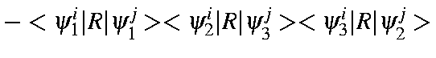
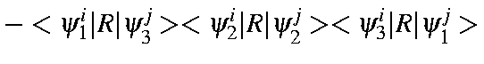
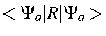

Consider the effect of an operation, R, on a state, Φa.
The
character of the operation is given by

Consider a full set of M.O.s:
To continue, we need to evaluate
 .
This can be expressed
in terms of M.O.s as:
.
This can be expressed
in terms of M.O.s as:
For convenience, we will represent the integral
 by
by
 .
This integral can be described as "The integral over M.O.
ψk
in microstate Ψi
with the result of operator R acting
on M.O. ψk
in microstate Ψj.
.
This integral can be described as "The integral over M.O.
ψk
in microstate Ψi
with the result of operator R acting
on M.O. ψk
in microstate Ψj.
Using this abbreviation,
 can be written as:
can be written as:
For our purposes, solution of the determinant is best done explicitly. To see why, note that the number of M.O.s involved in the C.I. (the active space) is very small. Because of this, the number of electrons, N, in the Slater determinants is also small; N has a maximum value of 20. Next, use can be made of the fact that no point-group operation can mix α and β electrons. This allows the integral to be split into two parts, each of which has a maximum value of N=10. Finally, remember that N is the number of electrons, not M.O.s, used in the active space. A system of N electrons has the same symmetry as a system in which all the M.O.s which were occupied were replaced with all the M.O.s which were not occupied (the positron equivalent) . (This assumes that if every M.O. were occupied, then the state of the system would be totally symmetric.) Using this fact, we can replace the N occupied M.O.s with N' unoccupied M.O.s, if N' < N.
When these three points are considered, we see that N has a maximum value of 5 (for a system of 10 M.O.s). Each case can be considered separately.

| = | |||
| <\psi_2^i\vert R\vert\psi_3^j><\psi_3^i\vert R\vert\psi_2^j>$"> | |||
| <\psi_2^i\vert R\vert\psi_2^j><\psi_3^i\vert R\vert\psi_1^j>$"> |
| = | |||
For higher numbers of electrons, the associated determinant is solved using standard methods.
The total character,
$">,
is obtained by multiplying the
characters for the  and
and  parts together:
parts together:
These expressions can then be used in
For the atom, the Russell-Saunders coupling scheme can be reproduced. States allowed are S, P, D, F, G, H, I, K, L, and M. This set is more than sufficient to allow all possible Russell-Saunders states spanned by a basis set of s, p, and d orbitals to be represented. The highest angular momentum achievable with such a basis set is 8, i.e. L. For simpler atoms (ones with only a s-p basis set) the allowed states are p0,p6: 1Sg, p1,p5: 2Pu, p2,p4: 1Sg+3Pg+1Dg , p3: 4Su+2Pu+2Du.
For the axial infinite groups, allowed states are: Σ, Π, Δ, θ, and Γ. Even quite simple systems can achieve quite high angular momentum, thus acetylene, with a C.I.=4 (the HOMO π and LUMO π*) will contain a 1Γg state, i.e., the angular momentum will be 4.